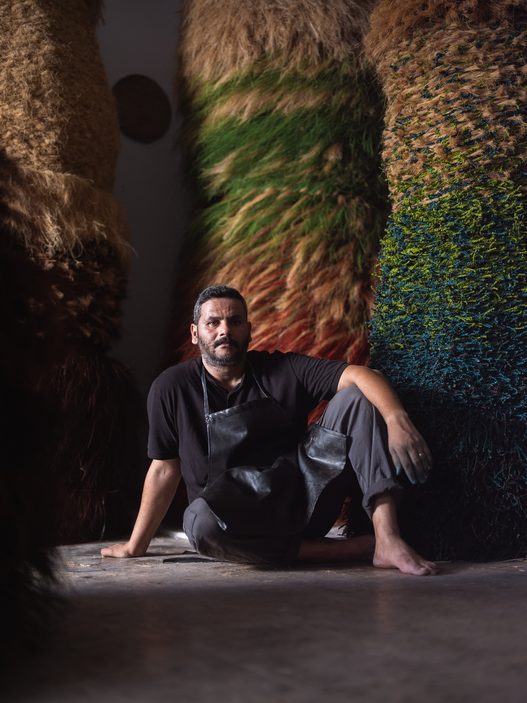
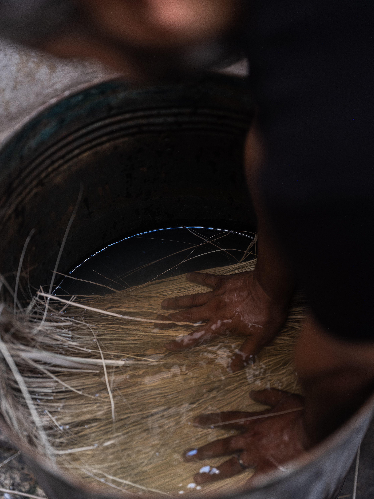
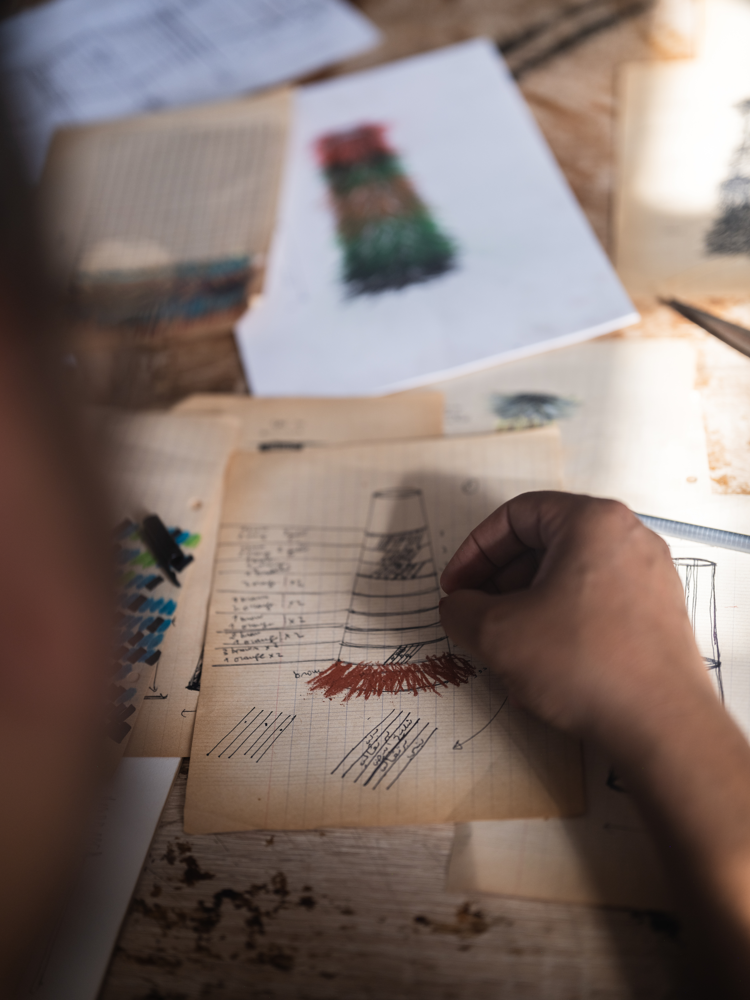
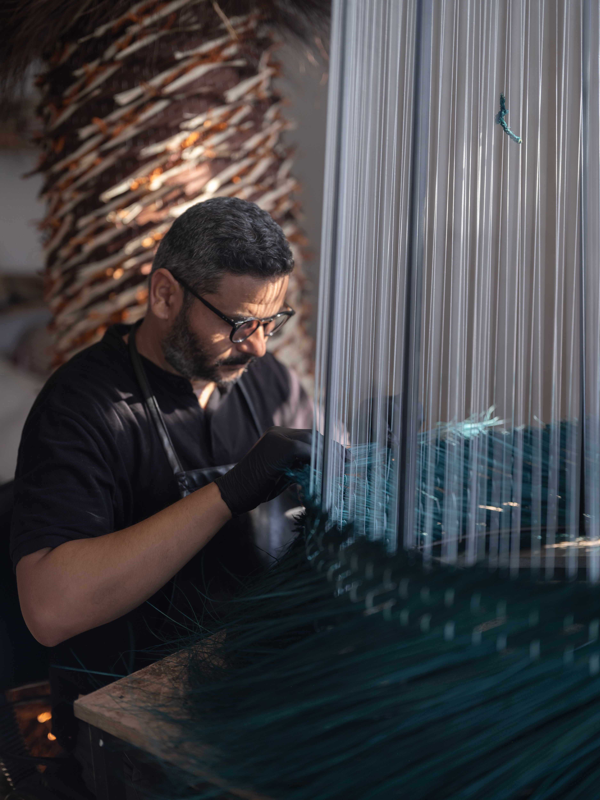
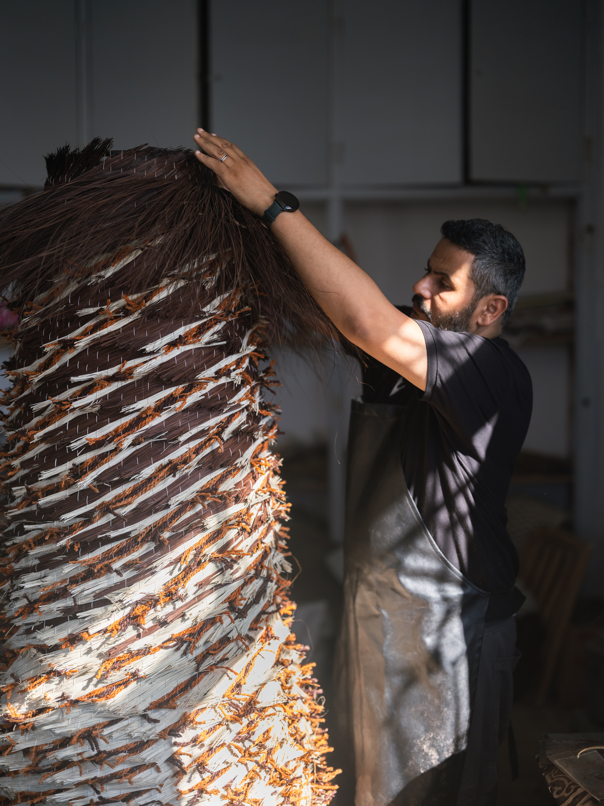
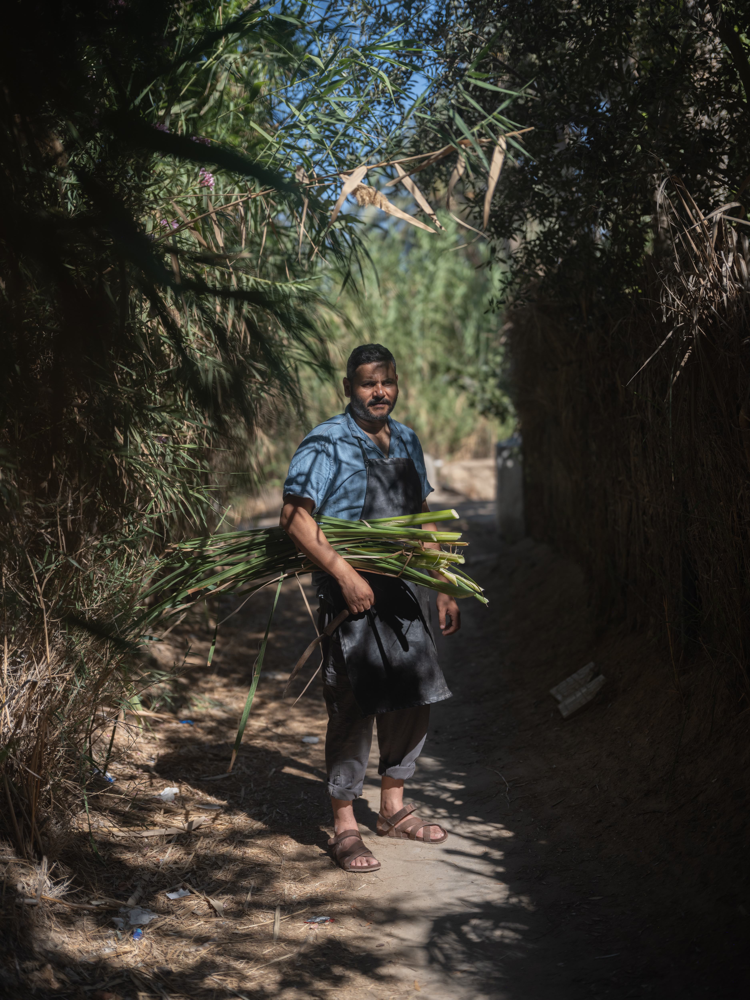

Mohamed Amine Hamouda has been developing a body of work closely linked to the Gabès oasis over the years, reflecting on the current state of degradation of this ecosystem. Through painting, collages, and installations, he seeks to explore the aesthetic potential of materials sourced from this environment and to develop a range of materials and a vocabulary extracted directly from the fibre. His works on handmade paper, his pigmented fibre compositions, and his tapestries draw their plasticity and materiality directly from the oases of his region. As both an artist and a scenographer, Mohamed Amine Hamouda’s research explores the botanical, maritime and natural resources of Gabès to create works that document and interpret the threatening situation of the region’s biodiversity and ecosystem as a result of industrial intervention. In doing so, he aims to generate new possibilities and responses to social, environmental, and economic challenges. Working alongside his local community, his research questions the dominant narratives inherent in colonialism and post-independence, as well as the prevailing forces that dictate established practices.
He holds an MA in Art Sciences and Techniques from the Higher Institute of Arts and Crafts of Gabes where he currently teaches.
Since 2010, Mohamed Amine has been actively exhibiting in Tunisia and internationally, including Morocco, Greece, China, Turkey, Germany, Switzerland, Italy, Qatar, and Kuwait. His solo exhibitions include “Transcendance” (2016, Gabès), “A Fleur de Papier” (2018, Elbirou, Sousse), and “Transe-Papier” (2019, Institut Supérieur des Arts et Métiers, Gabès). He received the second prize at the Biennale des Artistes Arabes in Kuwait in 2019. More recently, he showcased his work in “Ragata… The Silk Road” and “Fire and Embers” in the joint exhibition Hirafen in 2023. He was also awarded the 2024 RDC Art Collection prize. In 2026, his work has been presented at Art Basel in Basel, the Design Doha Biennial, the Homo Faber Biennial in Venice, and in a group exhibition at the Misk Art Institute in Riyadh.
Mohamed Amine Hamouda’s work pertains to notable collections such as the SAMOCA: Saudi Arabia Museum of Contemporary Art, Saudi Arabia; Ithra, The King Abdulaziz Center for World Culture, Saudi Arabia and Fatma Kilani Collection, Tunisia.